10-Year Plan Poster
This poster shows my 10-year research plan on one page. It follows the #betterposter design by Mike Morrison. The main message is in large text in the center, and the details are at the sides. Select the image to open the full-size PDF.
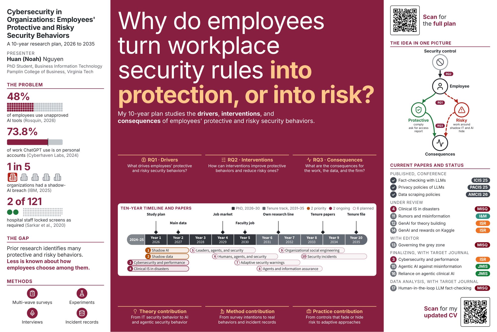
Alternative Poster Designs
These 20 posters show the same plan in other #betterposter layouts. They are the compact edition of each design. Select a poster to open its PDF.
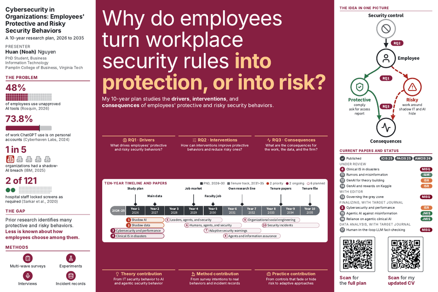
01 · Original Gen 2 landscape: silent presenter bar, takeaway with key figure, ammo bar.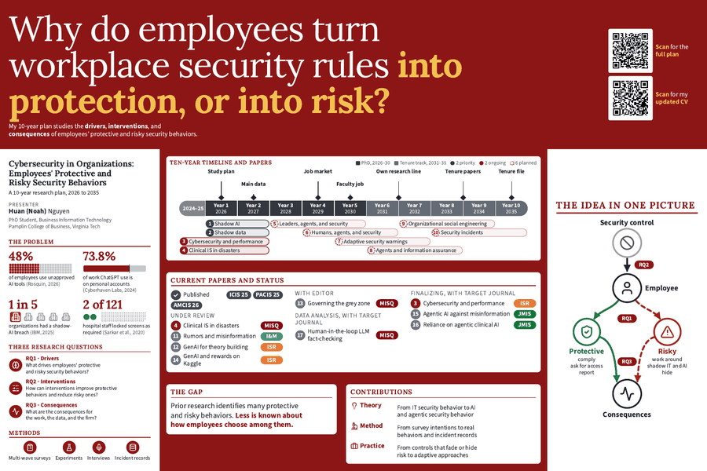
02 · T Layout A colored top band with the takeaway and a colored center stem.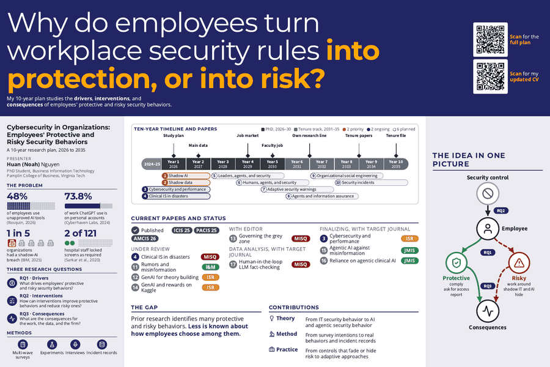
03 · Figure Hero Takeaway band on top, one large figure area below.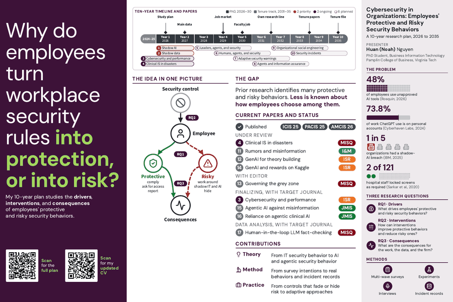
04 · Presenter Tall takeaway column on the left, wide figure area, presenter bar on the right.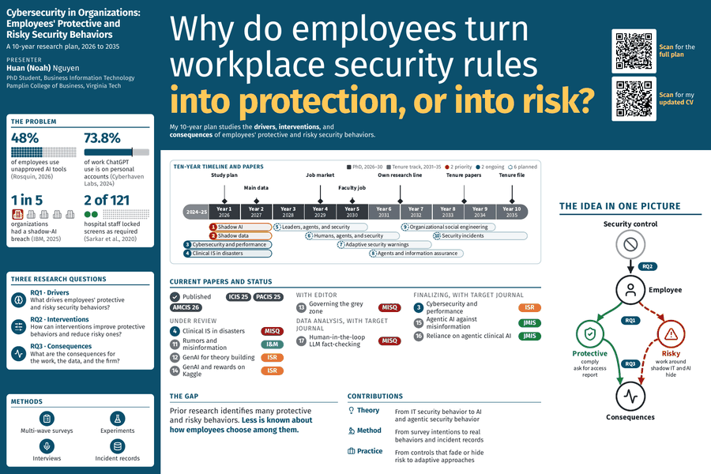
05 · L Layout One solid colored L: left bar and top band.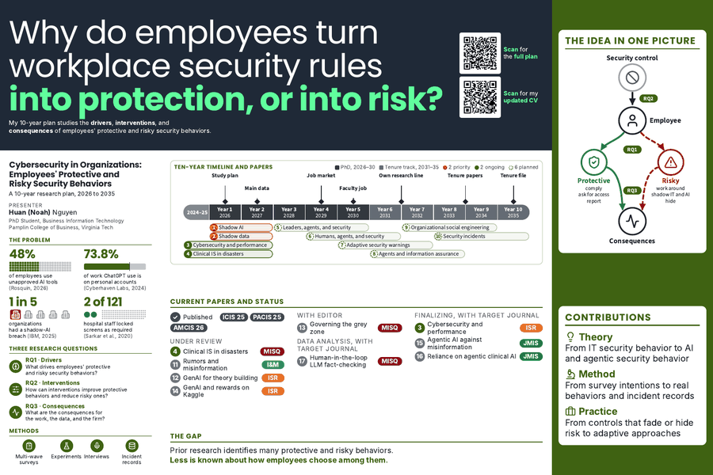
06 · Mirrored L The L flipped: top band and right bar. 07 · Arch Frame A colored arch: two side bars joined by the takeaway band.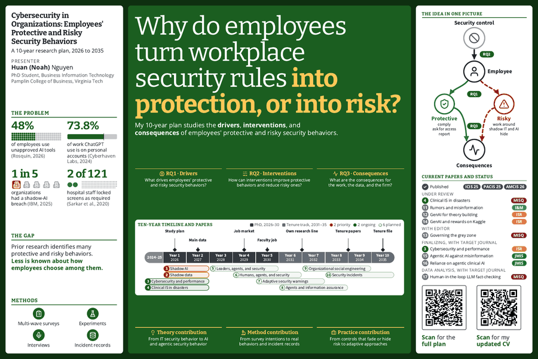
08 · Trifold Board Three panels on a board, like a science-fair trifold. 09 · Bifold Board Two panels: the takeaway panel and the detail panel.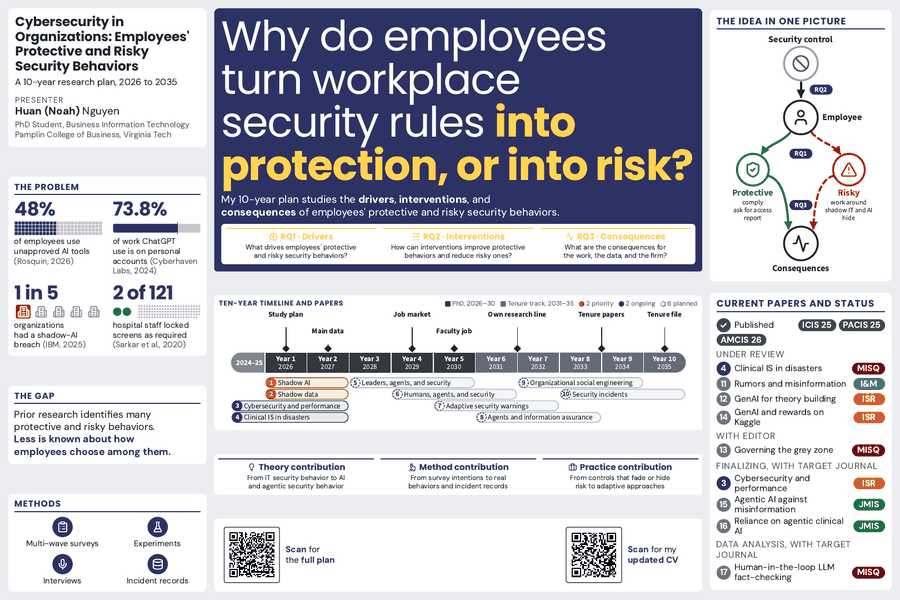
10 · Thread Cards Cards on a tinted board, with one large takeaway card. 11 · Center Stage Title strip on top, takeaway in the middle, figure below.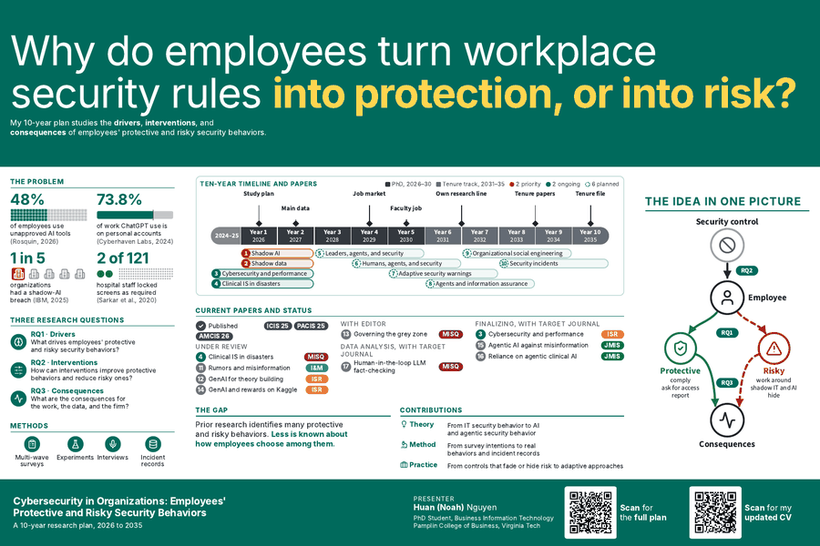
12 · Portrait Bands Stacked bands: takeaway, detail, and a footer with the name and QR code.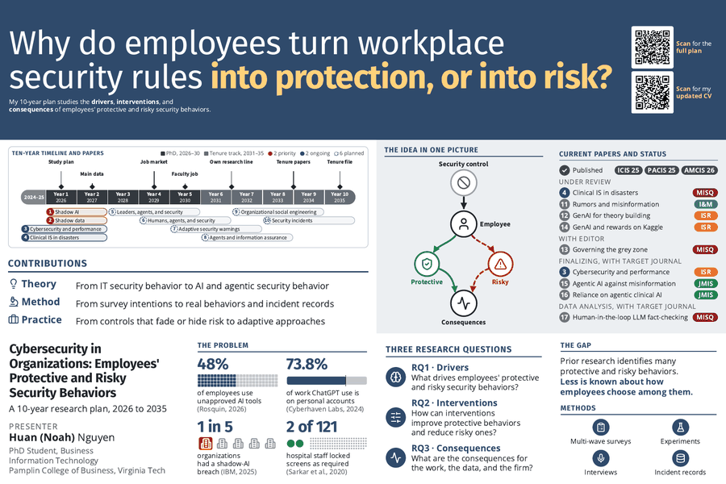
13 · Three Rows Takeaway row, figure row, detail row.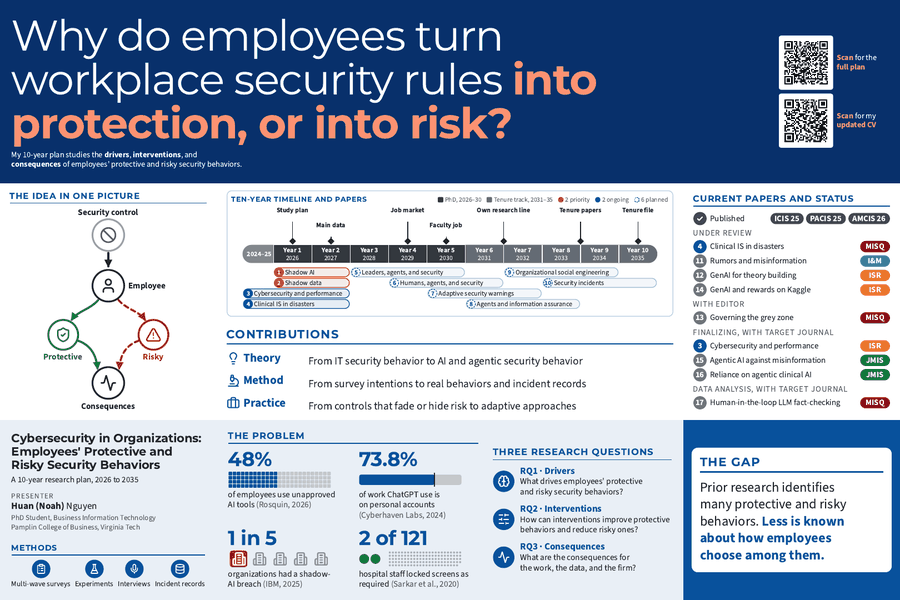
14 · Z Pattern The eye moves in a Z, from the takeaway to the QR code at the bottom right.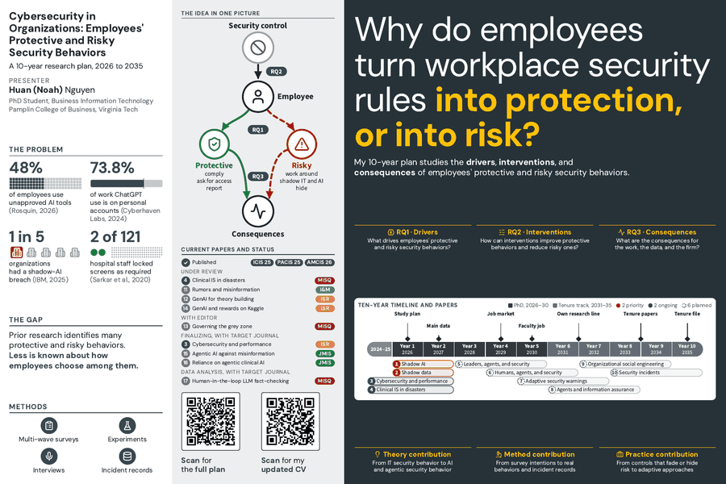
15 · Split Screen Detail on the left half, the takeaway on the right half.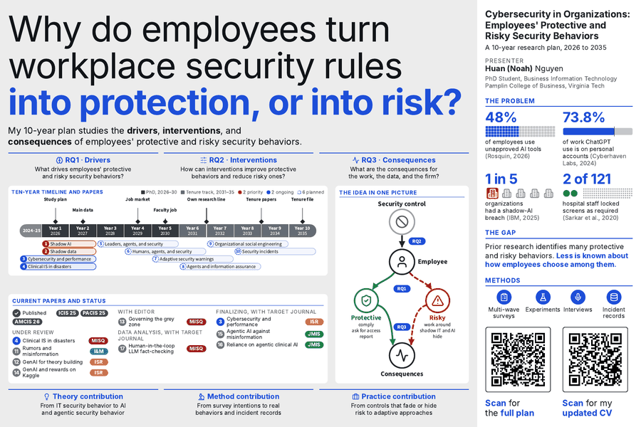
16 · Hyper-Minimalist Very large dark takeaway on light grey, with a slim detail bar. 17 · Ammo Drawer Dark takeaway on top and a drawer of detail along the bottom. 18 · Gen 1 Classic The first #betterposter: takeaway and QR code in the center, two side bars.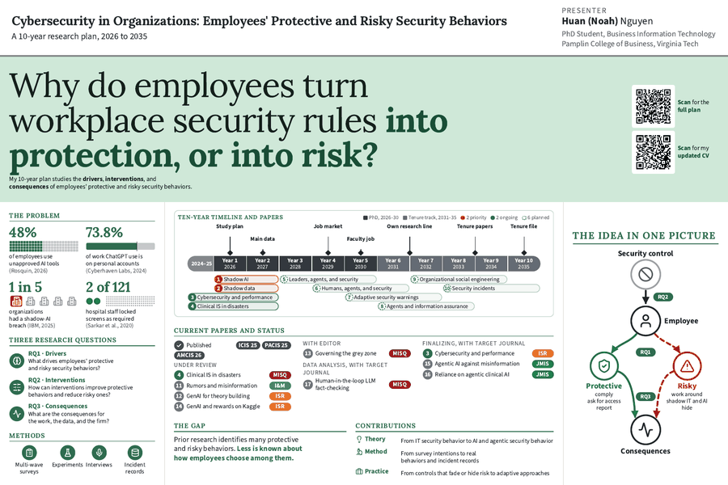
19 · Newspaper A masthead, a headline band, and three columns.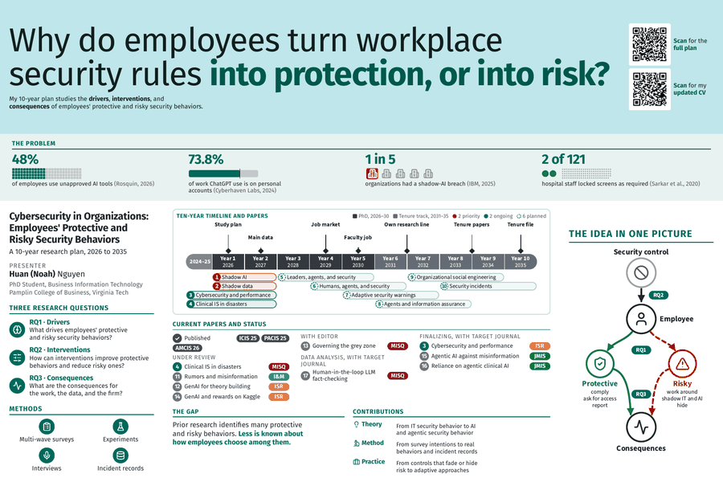
20 · Stat Strip Takeaway band, then a strip with the four problem numbers.